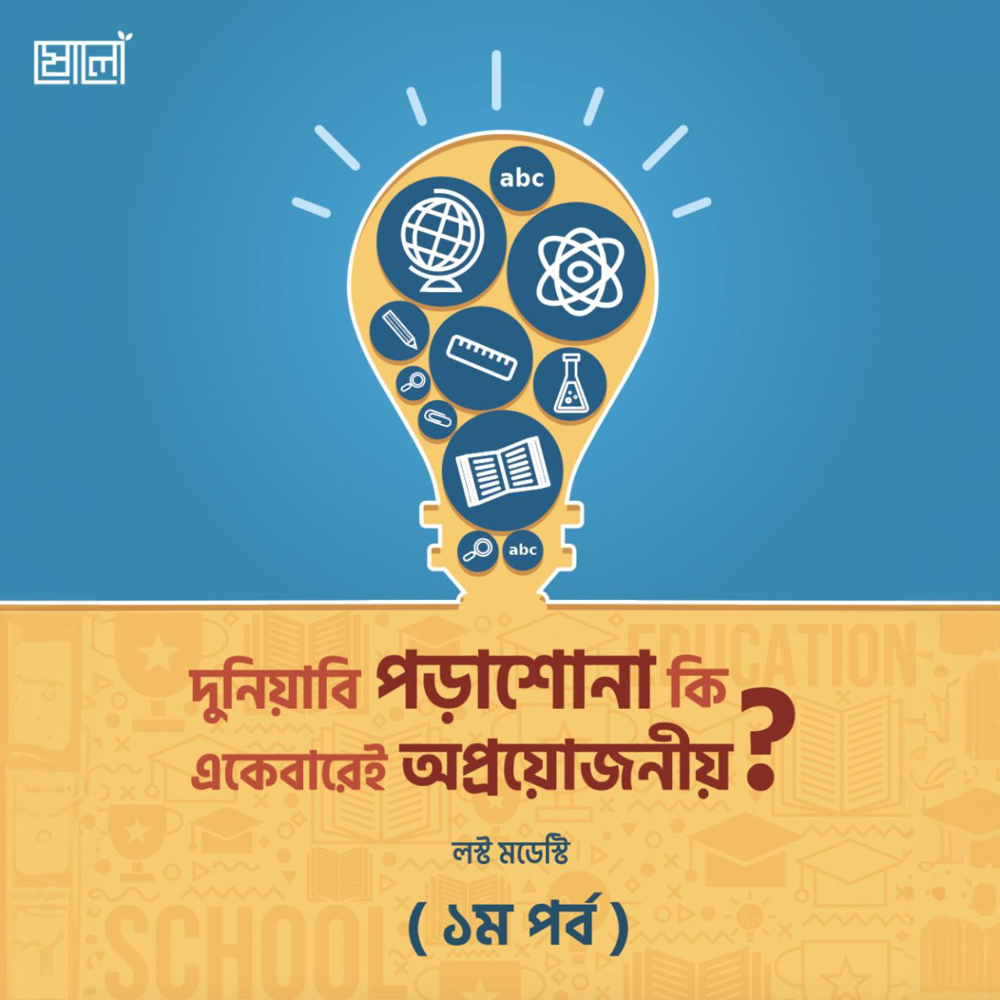

জীবনের এ পর্যায়ে এসে সদ্য দ্বীনে ফেরা কিশোর-তরুণেরা মনে করে বসে, জেনারেল লাইনের এই পড়াশোনাগুলো একেবারেই অপ্রয়োজনীয়। এ সমস্যাটা একেবারেই নতুন। এই সমস্যাটার কয়েকটা ধরন আছে—
.
ক) এগুলো দুনিয়াবি পড়াশোনা। এগুলো করলে আমার আখিরাতে কোনো ফায়দা হবে না। কাজেই সব বাদ। আমার নিজের ভার্সিটি লাইফের একটা কথা মনে পড়ছে। এক জুনিয়র এসে আমাকে বলছে—ভাই, আমার এই পড়াশোনা করে কী লাভ! এর চেয়ে আমি সারাদিন কুরআন পড়ব! কুরআনের এক হরফ পড়লে দশটা করে নেকী!
খ) এই আর কিছুদিন পরেই ইমাম মাহদী আসবেন। দাজ্জাল আসবে। তৃতীয় বিশ্বযুদ্ধ হবে। কাজেই এত পড়াশোনা করে কী হবে? এগুলো তো কোনো কাজেই আসবে না।
গ) আমাকে মাদরাসার শাইখ আর মাওলানাদের মতো আলিম হতে হবে।
.
প্রথম চিন্তাটার ব্যাপারে আসি। যদি তুমি বুঝেই থাকো যে, এই পড়াশোনা তোমার কোনো কাজে আসবে না, তাহলে শুধু শুধু স্কুল-কলেজ ভার্সিটিতে থেকে ঠেলেঠুলে খুব খারাপ একটা রেজাল্ট নিয়ে বের হবার জন্য অপেক্ষা করে আছো কেন? বাবার টাকা নষ্ট করছ কেন? তুমি তো এখন ফুলটাইম আখিরাতের কাজ করতে পারছ না, তোমাকে ক্লাস করতে হচ্ছে, পরীক্ষা দিতে হচ্ছে… এসব অনর্থক নয়? এসব কি তোমার সময় নষ্ট নয়?
.
যদি তুমি সত্যিকার অর্থেই এগুলোকে অর্থহীন মনে করো, শিক্ষা প্রতিষ্ঠান থেকে বিদায় নাও। এক মুহূর্ত সময় নষ্ট না করে ইসলামের জন্য ফুলটাইম কাজ শুরু করে দাও। তুমি ভাবছ তুমি বেছে নেবে যুহদের জীবন, ছেঁড়া-তালি দেওয়া কাপড় পরবে, রুটি আর খেজুর খেয়ে দিন পার করে দেবে ভবিষ্যতে। কিন্তু সেটা তুমি এখন করছ না। কেন? যদি এগুলোই তুমি জীবনের লক্ষ্য নির্ধারণ করে ফেলো, তাহলে এখন এই কাজগুলো করছ না কেন?
.
তুমি আসলে কী করছ? সামাজিক যোগাযোগ মাধ্যমগুলোতে বিয়ে নিয়ে ঘণ্টার পর ঘণ্টা অনর্থক মজা করছ, ‘দ্বীনি’ ভাইদের সাথে দ্বীনি আড্ডার নামে অনেক সময় নষ্ট করছ, কয়েকদিন পরপর রেস্টুরেন্টে গিয়ে দামি দামি খাবার খাচ্ছ, সেলফি তুলে চেকইন দিচ্ছ… আবার ঘরে ফিরে বলছ আমার এত টাকা-পয়সার দরকার নাই, আমি যুহদ অবলম্বন করব, এসব দুনিয়াবি পড়াশোনা করার কোনো মানেই নেই ইত্যাদি। তাহলে মোটের ওপর যে জিনিসটা দাঁড়াচ্ছে তা হলো, তুমি নিজের অলসতাকে দ্বীনের মোড়কে ঢাকতে চাচ্ছ। তুমি একটা অলস। এটাই হলো উপসংহার।
.
দেখো, জীবনযাপনের জন্য সামান্য কিছু হলেও অর্থের দরকার পড়ে। অধিকাংশ কিশোর-তরুণদের এই বয়সটাতে টাকা নিয়ে ভাবতে হয় না, বাবা বা অভিভাবকের কাছে চাইলেই পাওয়া যায়। তাই অনেকেই এই ধোঁকায় পড়ে যায়। টাকা-পয়সার দাস হওয়া যাবে না; তাই বলে টাকা-পয়সার যে দরকার নেই জীবনে, এমনও না। তুমি তো আর বাতাস খেয়ে থাকবে না, তোমার স্ত্রী বা বাচ্চাকাচ্চাকেও তো বাতাস খাইয়ে রাখবে না। আল্লাহর ওপর তাওয়াক্কুল? রিযিক নির্ধারিত?
.
রাসূলুল্লাহ ﷺ বলেছেন, ‘তোমরা যদি আল্লাহর ওপর যথাযথ তাওয়াক্কুল (ভরসা) করো, তাহলে তিনি তোমাদেরকে এমনভাবে রিযিক দেবেন যেমন তিনি রিযিক দেন পাখিদের। তারা সকালে খালি পেটে বের হয়ে যায় আর সন্ধ্যায় ভরা পেটে ফিরে আসে।’
.
পাখিরা আল্লাহর ওপর তাওয়াক্কুল করে ঘরে বসে থাকে না। তারা রিযিক অন্বেষণে সকালে বেরিয়ে পড়ে। তাওয়াক্কুল অর্থ বসে থাকা নয়। শক্তি-সামর্থ্য অনুযায়ী চেষ্টা-সাধনা করে ফলাফলের জন্য আল্লাহর ওপর নির্ভর করার নামই প্রকৃত তাওয়াক্কুল।
.
এমন আরও অনেক হাদীস আছে। রাসূলুল্লাহ ﷺ কে জিজ্ঞাসা করা হলো, ‘আমরা উঠ ছেড়ে দিয়ে তাওয়াক্কুল করব না বেঁধে রেখে?’ তিনি উত্তর দিলেন, ‘তোমরা আগে উঠ বেঁধে নাও; তারপর তাওয়াক্কুল করো।’
.
ইবনুল কাইয়িম রহিমাহুল্লাহ বলেন, ‘তাওয়াক্কুল হলো বান্দাকে তার দ্বীন ও দুনিয়ার ব্যাপারে যা উপকৃত করে, তা অর্জন করার ক্ষেত্রে এবং তার দ্বীন ও দুনিয়ার ব্যাপারে যা ক্ষতি করে, তা প্রতিরোধ করার ব্যাপারে আল্লাহর ওপর হৃদয়-মন দিয়ে নির্ভর করা। আর এ নির্ভরতার সাথে সরাসরি উপায়-উপকরণের অবলম্বনও জরুরি।’
.
দেখো, আল্লাহর ওপর তাওয়াক্কুল করে বসে থাকলেই যদি জীবিকা চলে আসত, তাহলে সাহাবিরা ব্যবসা করতেন না, কৃষিকাজ বা দিনমজুরি করতেন না। চুপ করে ঘরে বসে ‘আল্লাহ আল্লাহ’ করতেন; আর আল্লাহ তাঁদের জন্য ফেরেশতার মাধ্যমে খাবার পাঠিয়ে দিতেন! তাহলে তুমি কেন এমন চিন্তা করছ?
.
না তুমি ভাবছ—
১. সাহাবিরা তাওয়াক্কুল কী সেটা বুঝতে পারেননি। আবূ বকর, উমারের মতো মানুষ তাওয়াক্কুল কী সেটা বুঝতে পারেননি। রদিয়াল্লাহু আনহুম।
অথবা
২. তাঁরা আল্লাহর ওপর তাওয়াক্কুল করতে পারেননি। তাওয়াক্কুল করতে পারলে ঠিকই আল্লাহ ফেরেশতার মাধ্যমে খাবার পাঠিয়ে দিতেন। তাঁদের আর ব্যবসা-বাণিজ্য, যুদ্ধের গনীমত, কৃষিকাজ ইত্যাদি করা লাগত না?
উত্তর আমাকে দেওয়া লাগবে না। তুমি তোমার নিজেকে উত্তর দাও।